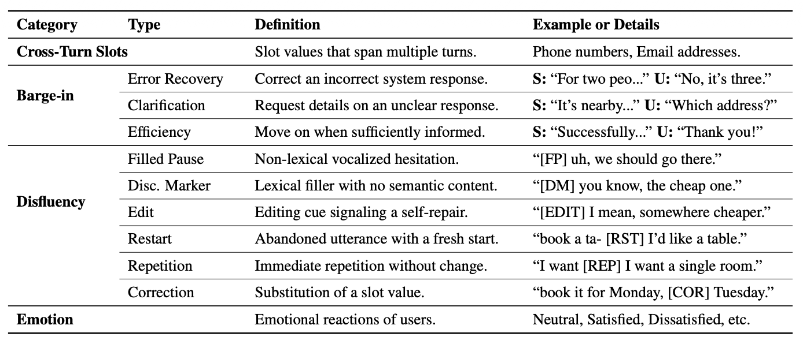
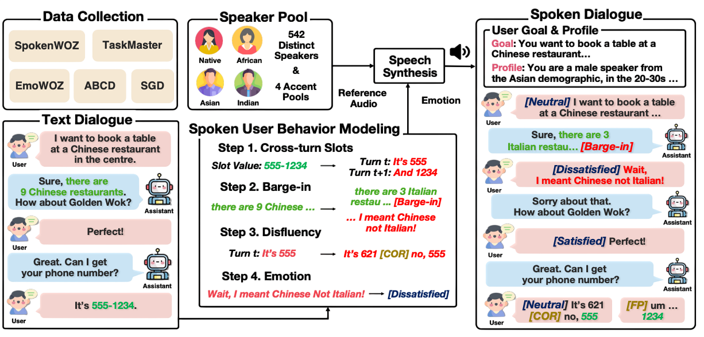
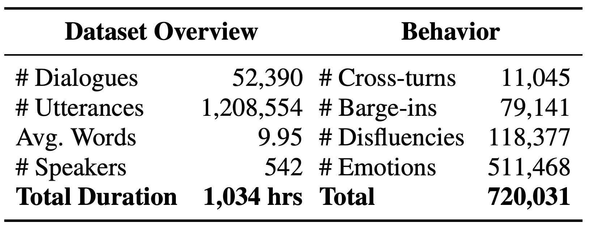
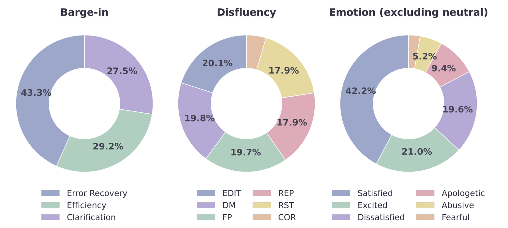
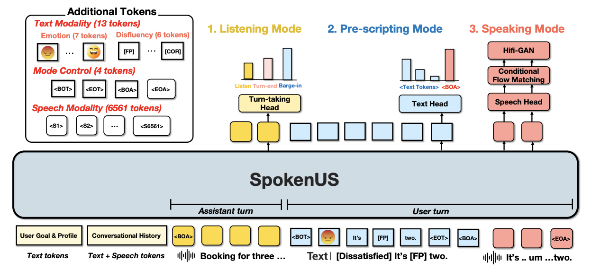
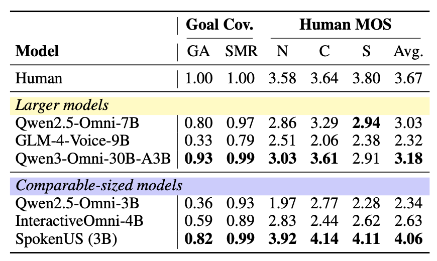
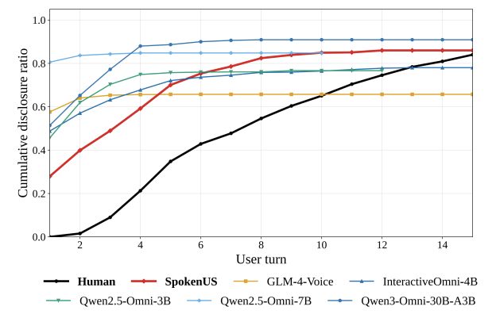
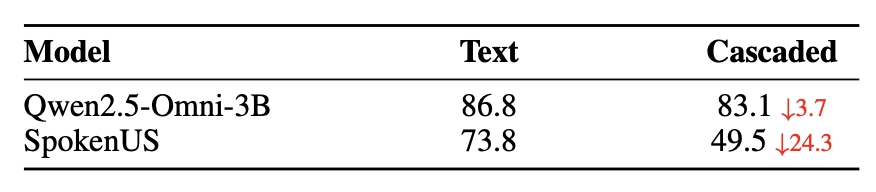
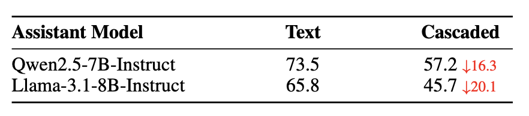

Abstract
Robust task-oriented spoken dialogue agents require exposure to the full diversity of how people interact through speech. Building spoken user simulators that address this requires large-scale spoken task-oriented dialogue (TOD) data encompassing spoken user behaviors, yet existing datasets are limited in scale and domain coverage, with no systematic pipeline for augmenting them. To address this, we introduce SpokenTOD, a spoken TOD dataset of 52,390 dialogues and 1,034 hours of speech augmented with four spoken user behaviors—cross-turn slots, barge-in, disfluency, and emotional prosody—across diverse speakers and domains. Building on SpokenTOD, we present SpokenUS, a spoken user simulator grounded in TOD with a dedicated architecture for barge-in. SpokenUS achieves comparable goal coverage to significantly larger models while substantially outperforming all baselines in Human MOS, disclosing slot values gradually across the dialogue as humans do rather than front-loading them. Further analysis confirms that SpokenUS's spoken behaviors pose meaningful challenges to downstream agents, making it a practical tool for training and evaluating more robust spoken dialogue systems.
Spoken User Behaviors

Unlike clean, text-based exchanges, natural human spoken interactions are characterized by spontaneous and diverse behaviors. To build and evaluate robust spoken dialogue systems, this work defines four key spoken user behaviors. These include Cross-turn slots, where complex information is provided incrementally across multiple turns; Barge-in, where the user interrupts the system mid-utterance; Disfluency, which captures real-time speech imperfections like hesitations and self-repairs; and Emotion, reflecting the speaker's emotional state through prosody.
SpokenTOD



SpokenTOD is a large-scale spoken task-oriented dialogue (TOD) dataset created by augmenting existing text-based corpora with the four spoken user behaviors. The dataset encompasses 52,390 dialogues and 1,034 hours of synthesized speech. By utilizing a diverse pool of 542 distinct speakers, it effectively simulates a wide range of real-world user voices and accents. Through a systematic and automated augmentation pipeline, cross-turn slots, barge-ins, disfluencies, and emotion labels are naturally injected into the text dialogues before being synthesized into high-quality speech.
SpokenUS

Built upon SpokenTOD, SpokenUS is a spoken user simulator grounded in TOD knowledge with a dedicated architecture for handling proactive turn-taking. The simulator operates in three sequential modes: Listening Mode, which continuously monitors incoming assistant speech to determine the exact timing for an interruption; Pre-scripting Mode, which generates a structured text transcript interleaved with explicit emotion and disfluency tags; and Speaking Mode, which autoregressively synthesizes the generated transcript into speech. By disclosing slot values gradually across the dialogue—just as humans do—SpokenUS achieves highly competitive goal coverage and substantially outperforms significantly larger omni models in speech naturalness.
Results
Our evaluation demonstrates that SpokenUS achieves highly competitive goal coverage and speech quality. It achieves a Goal Alignment of 0.82 and an average Human MOS of 4.06, outperforming comparable-sized baselines and surpassing significantly larger omni models in speech naturalness. Unlike existing models that front-load information, SpokenUS discloses slot values gradually across multiple turns, mirroring natural human conversations and reducing generation latency. Furthermore, testing downstream dialogue agents reveals that SpokenUS presents a substantially greater challenge. Agents show significant performance drops when facing SpokenUS, confirming that its realistic spoken behaviors provide a rigorous and practical testbed for evaluating robust spoken dialogue systems.




BibTeX
@article{lee2026spokenus,
title={Spokenus: A spoken user simulator for task-oriented dialogue},
author={Lee, Jonggeun and Pyo, Junseong and Park, Jeongmin and Jo, Yohan},
journal={arXiv preprint arXiv:2603.16783},
year={2026}
}